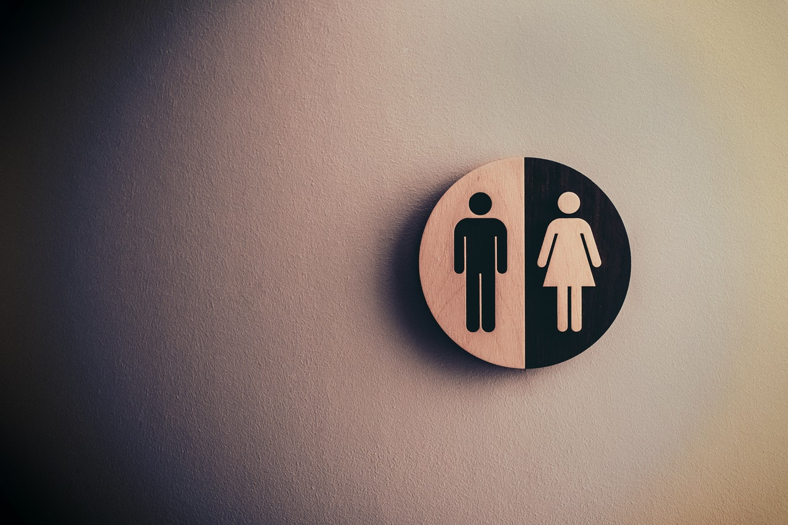

Homoseksualiteit
∞ ⋈ ∞ ∞ ⋈ ∞ ∞ ⋈ ∞
Eerste publikasie: 27 Junie 2019
Probleme rakende homoseksualiteit was veroorsaak deur die gemeen-skap eerder as individue, as gevolg van argumentering oor wat dit beteken om 'n man of 'n vrou te wees.
Homoseksualiteit het baie prominent geraak in die hele wȇreld. Dit is relevant by politiek, veral omdat wetgewing, geskryf in die verlede, sodomie verbied het. In die verlede was sodomie en homoseksualiteit vereenselwig as dieselfde, maar duidelik het dit verander, want deesdae word mense gelaster deur hulle homoseksueel te noem, sonder om tweekeer te dink of hulle sodomieters is. Die vals aantuigings het 'n politieke speelbal geraak om opposisie te isoleer. Dalk is dit hoekom dit polities verkeerd geraak het om ander openlik te beskuldig daarvan. Party argumenteer, om slegte bedoelings te verduister, mens word homoseksueel gebore. Hulle argumente val plat wanneer mens kyk na die lewensverloop van mense wat as gevolg van lasterlike vals skinderstories "gay" genoem word. Die aantuigings word partykeer eers gemaak, wanneer die opposisie begin. Ek kan getuig daarvan. Party argumenteer mens besluit self of mens homoseksueel is. Al die argumente ken ek nie, maar duidelik is daar nie genoeg ooreenstemming in die samelewing daaroor vir samehorigheid oor die kwessie.
Baie mense se eerste kennismaking met die woord sodomie is in die Bybel (Gen. 13 en 18), waar God Sodom en Gomorra vernietig het, nadat Lot en sy familie die streek verlaat het.
Verskoon asb. my spelling. "Gomorra" laat my nou wonder of ek dit reg gespel het. Gomer is makliker om te spel, want gomer het nie die a na die r.
Voor ek aangaan. Swak spelling en swak opstelle skryf was 'n akademiese swakheid van my op skool. Alhoewel ek sedertdien, natuurlik bewus geraak het van belangrike taalkundige konsepte, bv Grimm se teorie, is my taalvermoë, steeds nie goed. Mens moet daarom eerder idees, as prosa en poësie raak lees in my werk. Taalvaardigheid en logika is twee opponerende kragte, in lyn met geheue en logika. Goeie taalvaardigheid werk saam met goeie geheues. Logika werk saam met goeie idees. Rofweg, goeie logika word veroorsaak deur eerlikheid. Goeie geheues, wat spelling onthou, word veroorsaak deur oneerlikheid, want leuens moet onthou word. Spelling kan 'n leuen genoem word, as gevolg van die veranderlikheid daarvan. Die wat my gevoel deel, sal daarom nie baie ag slaan op my spelling; dalk, omdat hulle saamstem; dis nie moontlik om God se erkenning van spelling te ken. Sokrates bv. het gepraat oor die betekenis van elke letter en hoe God dit bepaal. Afrikaans se spelling word deur 'n groep bepaal, met Logos. Ek maak ook nie gebruik van 'n woordverwerker.
Nou ja, terug by die tameletjie, wat deesdae in gender teorieë, gesien word. Ek skryf daaroor omdat politiek en geloof dit beïnvloed. Stories word valslik versprei dat ander homoseksueel is. In my vorige artikel, genoem Geloofsvryheid, het ek genoem 'n onderhoofregter van Suid-Afrika het valslik, sy opinie geskryf, dat ek "homosexual" is. Dit was 'n baie nalatige fout en, ek dink, crimen injuria deur die regter. Onlangs het 'n wilde vreemdeling, baie aggressief, my beskuldig daarvan dat ek homoseksueel is. Ek ken die buurman skaars. Hy het bv. geskree op my "ek ken jou storie". In dieselfde dorp het ek ophou muurbal speel omdat 'n klomp "winkers" by die muurbal klub, met disrespek vir my oog geknip het. "Win-king" het 'n baie duidelike invloed begin speel in die media ook. 'n Vader en sy skoolseun bv. het met disrespek oog geknip vir my, terwyl ek net sosiaal wou muurbal speel. Ek glo nie hulle is homoseksueel. Niemand sal my oortuig dit was nie veroorsaak deur vals skinderstories. Die negatiewe invloed wat die valsheid op my lewe gehad het is wesenlik, daarom is dit 'n geval van vergewe en vermy; definitief nie 'n geval van vergewe en vergeet. Die wat sȇ, skrywes daaroor, dui op 'n slagoffer mentalityd is waarskynlik deel van die groep wat ek die Kajafaci noem. Hulle beskuldig eerlikes daarvan dat eerlikes elk dink "hy/sy" is "God homself" of "Godin haarself". Die Kajafaci meng díe beskuldigings met hulle gedagtes oor "gay" wees. Die Kaiafaci se reaksies op die "Moeder van God", "Seun van God" en "Vader" gedagtes, hoofsaaklik het hulle reaksies beïnvloed.
Ek lei af, die beskuldigings het iets te doen met geloof, want die onderhoofregter het geskryf van "his beliefs and homosexuality". Ek was eerlik groot gemaak en my ouers is vroeg oorlede as gevolg van hulle eerlikheid, daarom is eerlikheid belangrik vir my. In die Bybel was daar geskryf, eerlikes word met opset benadeel en geïsoleer. Dis nie maklik om eerlik te wees, gedeeltelik as gevolg van die gemeen-skap se Kajafas Sindroom en gedeeltelik as gevolg van indoktrinasie, wat eie gedagtes beïnvloed. Die indoktrinasie deur Christenskap was; "God" is eerlik en is een mens, en word geoffer. Beskuldigings teen eerlikheid is; "hy is selfsugtig". 'n Stryd vir eerlikheid is die moeite werd en nie selfsugtig. Eerlikheid is goed vir almal, want dit veroorsaak kreatiwiteit wat almal bevoordeel. Wanneer "die Skepper" geoffer word, het dit 'n baie negatiewe effek op eerlike mense se lewens en die samelewing in geheel. Die argumente dat eerlike mense selfsugtig is, is vals argumentering deur vyande van die idee Waarheid. My ouers het 'n stryd teen valsheid oorgedra aan my, waarmee ek aangaan. Die beskuldigings teen my, hou verband met kriminaliteit. Dit is algemeen bekend dat kriminele, gereeld sodomie in tronke beoefen. Kriminaliteit en valsheid hou nou verband, want mens kan nie openlik eerlik wees oor diefstal, moord, ens. a.g.v. die reg. Dus, ek glo, lae morele waardes, gedeeltelik, kan homoseksualiteit veroorsaak. Daar is natuurlik die risiko, dat, as gevolg van isolasie van eerlikes, hulle krimineel kan raak om te oorleef. Die Engelse werkwoord en selfstandige naamwoord "outlaw", dui daarop. Sekere opinies oor die betekenis van kriminele kapasitiet, beoordeel in die veld van regskapasiteit, voer aan, alle mense het kriminele kapasiteit. Sulke opinies ignoreer die werklikheid van mense wat gesterf het van die honger sonder om kriminele of kannibale te raak. Kriminaliteit, dink ek, is die hoofrede hoekom leuenaars soveel doen om eerlikes te isoleer en, om hulle lewens moeilik te maak. Dit is trurat evangelisasie wat hulle versprei. Die boodskap; Jesus het gesterf vir almal se sondes, het geword: Jesus sterf vir ander se sondes; daarom is dit aanvaarbaar, en party argumenteer, dis verpligtend om oneerlik te wees.
Ek argumenteer, lae morele waardes kan homoseksualiteit veroorsaak as volg. Lae morele waardes gaan soms gepaard met baie liberale seksuele gewoontes. Orgies kan veroorsaak dat mens die ervaring van 'n lekker vereenselwig met die ervaring van andere, van dieselfde geslag, se liggaamsreuke. Egbreek kan veroorsaak dat die ervaring van lekker, ervaar kan word, saam met die reuk van 'n ander, van dieselfde geslag, as self, want getroude mense het hulle seksmaats se reuke in hulle. Dit is gedeeltelik hoekom maagdelikheid en getrouheid hoog geag word. Wanneer ek dink aan seks, is dit grillerig om te dink aan 'n ander man in 'n vrou, waarmee ek 'n bed sal deel, omdat die ander man intiem te naby is. 'n Vrou wat onlangs 'n man in haar gekry het, moet liefs lank genoeg sonder seks bly, voordat sy aantreklik kan wees vir 'n ander man. Seks het ongetwyfeld baie met reuke te doen. As mens deurmekaar raak met ervaring, van manlike en vroulike reuke, en die verbande daarmee, met lekker, kan dit dalk homoseksualiteit veroorsaak. Dit het te doen met Pavlov se esperiment op honde. Dit handel oor verbande tussen ervarings en outomatiese liggamsreaksies. Net soos 'n klokkie 'n hond se speekselkliere kan aktiveer as die hond 'n verband ervaar tussen die klank van 'n klokkie en etenstyd, net so kan 'n mens verbande ervaar tussen reuke en lekker. Sien u nou hoekom ek dink, mens kan self besluit of mens homoseksueel wil word. Dit kan afhang of mens moreel leef of nie. Immorele lewenstyle kan mens meer geneig maak om homoseksueel te word. Ek glo nie enige mens, wat fisies met manlike of vroulike geslagorgane gebore word, word homseksueel gebore.
Wat betref, ander wat gebore word met manlike en vroulike geslagorgane, het ek nie 'n opinie, want dit is, dink ek, situasies wat individueel hanteer moet word deur die regte professionele mense en ouers. Professionele mense wat ander mense se fisiese geslag probeer verander, moet verhoed word. Onlangse statistieke sȇ, 40% van mense wat onderhewig geraak het aan geslagverandering, het probeer selfmoord pleeg, na die verandering. My ongeleerde opinie is daarom, dit moet nie toegelaat word. Manlike en vroulike geslagorgane word ook nie geidentifiseer, deur hoe dit lyk, met eerste oogopslag. Die vermoë om 'n kind te verwek as man of vrou is bepalend. Die vermoë het nie te doen met grootte van geslagorgane, of tegniek. Dit is belangrik vir party, maar almal is nie dieselfde.
Die crux van die situasie is, dink ek vandag, party macho manne en vroue het kriminele geraak, en as gevolg daarvan, baie mag gekry. Kriminele oortredings vind deesdae baie plaas deur intimidasie en crimen injuria. Van daardie basiese kriminele oortredings raak dit net erger, tensy mens die wet bo self stel en glo in God. Baie Christene bv. het begin argumenteer, as gevolg van hulle interpretasie van Paulus se skryfwerk, "Self" is verhewe bo die wet, want net "God", wat vir hulle sondes sterf, respekteer die wet. As gevolg van hulle gewoontes en los sedes het hulle ervaring van manlikheid en vroulikheid deurmekaar geraak. Hulle het deurmekaar geraak en hulle rykdom laat hulle reg voel. Daarom probeer hulle om ander, wat moreel leef, soos hulle te maak. Voor en na alles, argumenteer hulle, Jesus vergewe almal se sondes, daarom kan hulle laatwaai.